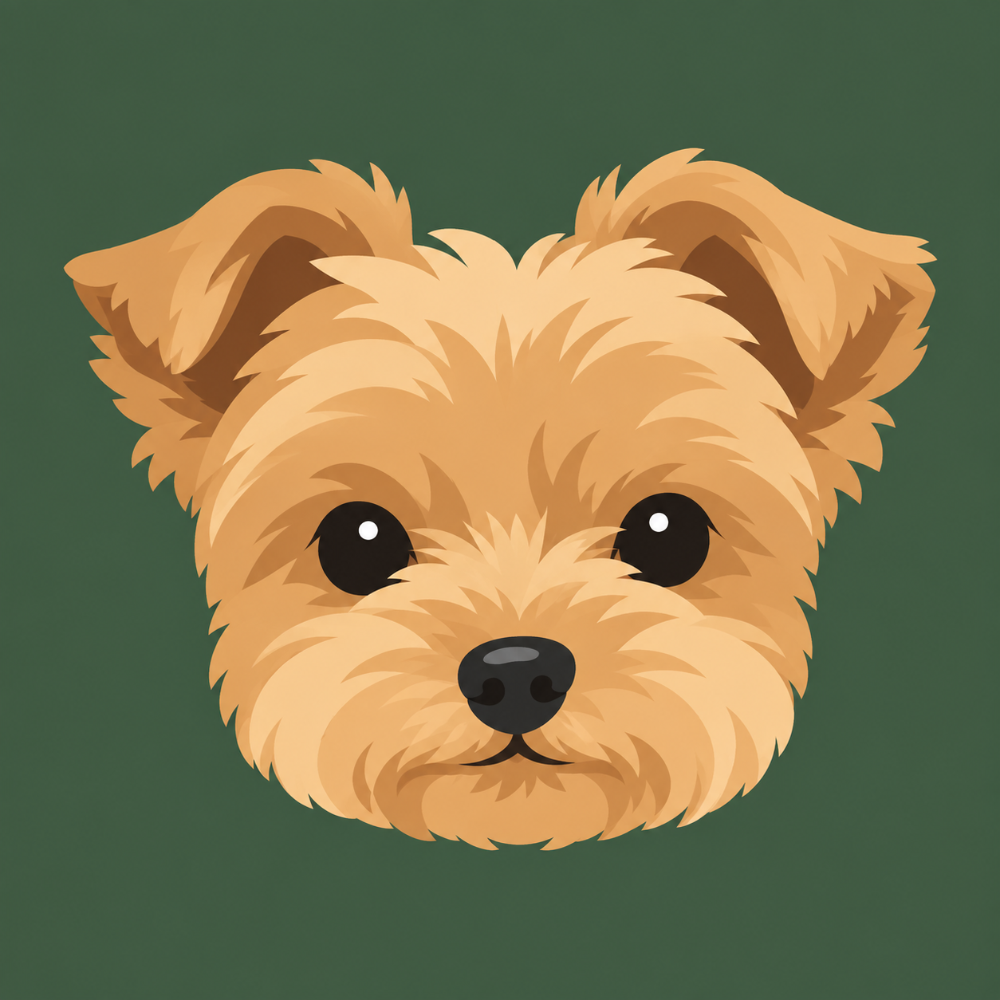
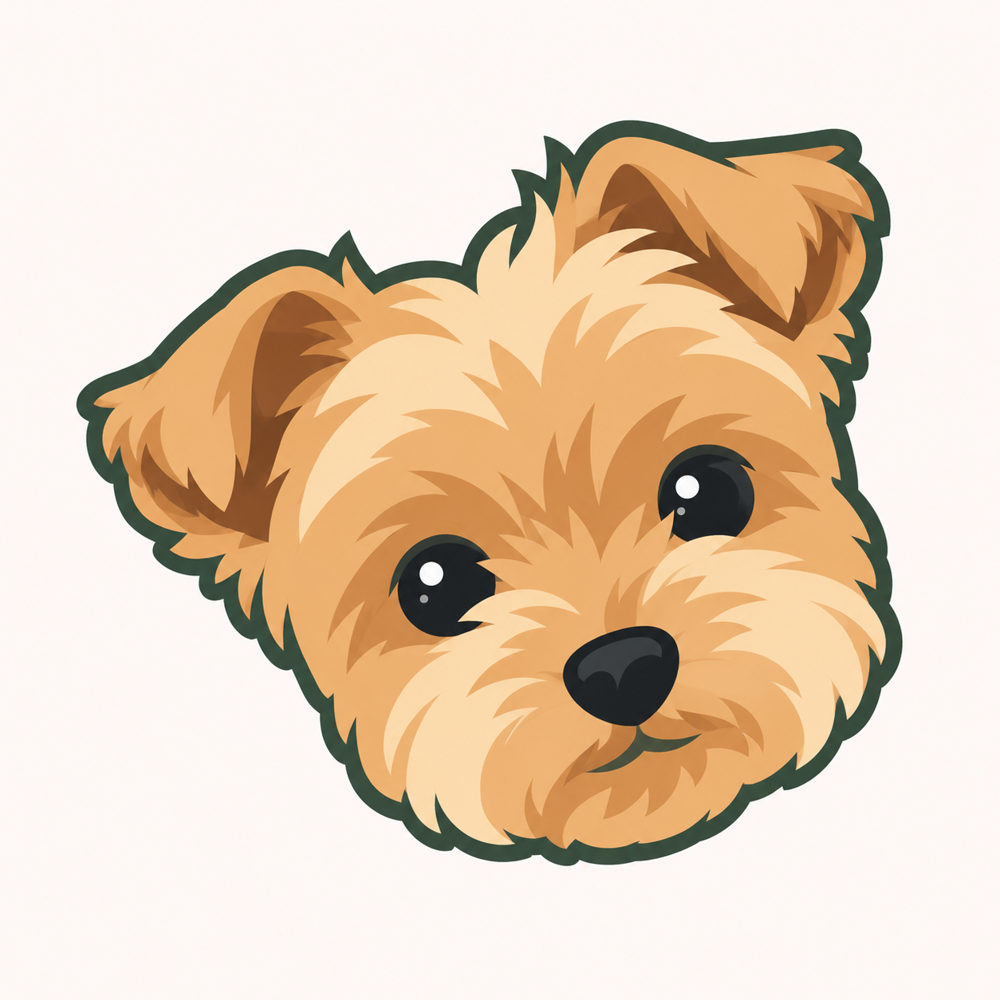
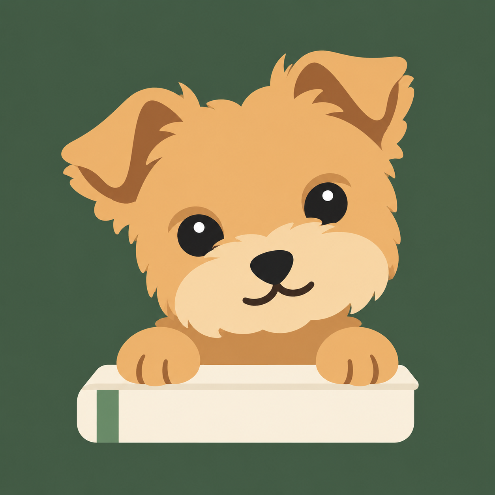
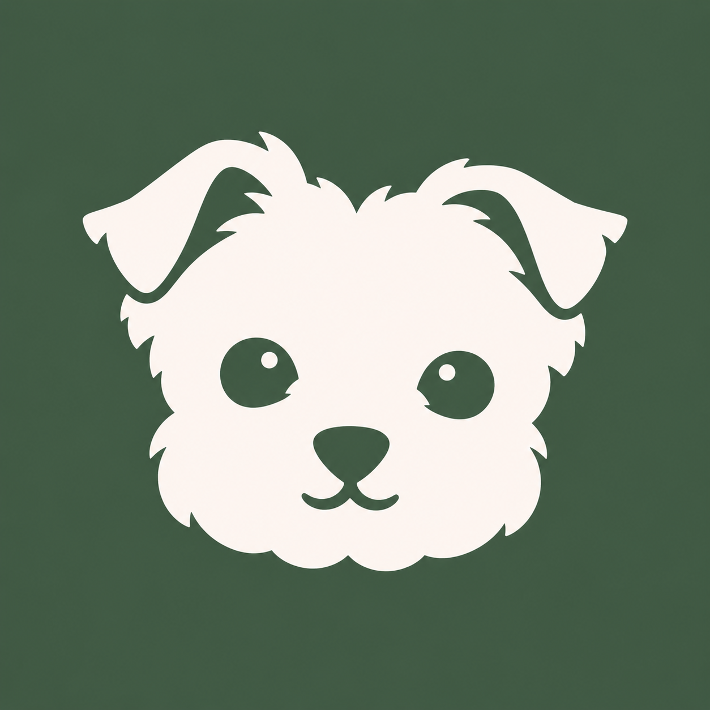

01 · 동그란 얼굴
강아지의 특징이 가장 또렷한 정면 얼굴
48 / 32 px
사진 속 접힌 귀와 동그란 눈, 복슬한 볼을 담은 네 가지 시안.
원본을 보려면 이미지를 눌러주세요. 작은 미리보기는 48px · 32px입니다.

강아지의 특징이 가장 또렷한 정면 얼굴

사진 속 고개를 갸웃한 표정을 담은 캐릭터

앞발을 장부 위에 올린 가계부 캐릭터

작은 크기에서도 선명한 두 색 심볼